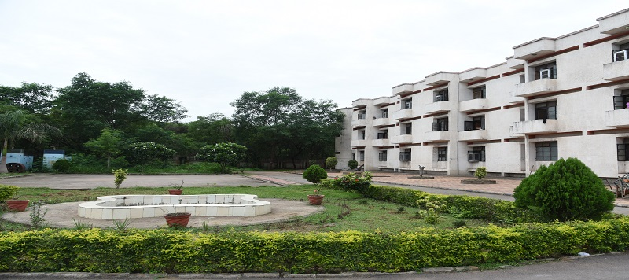
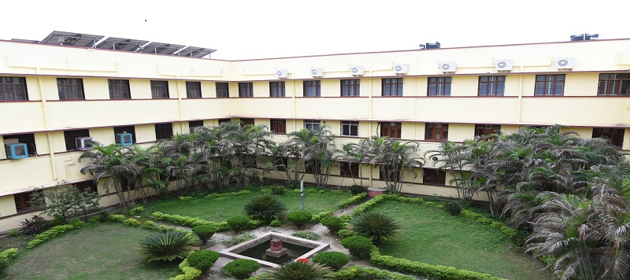
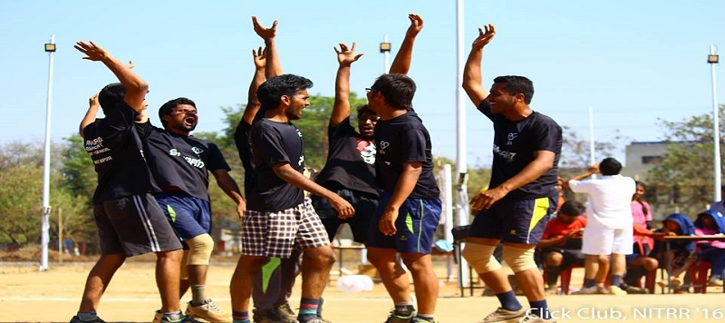
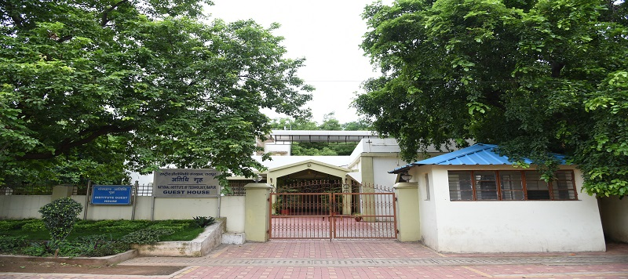
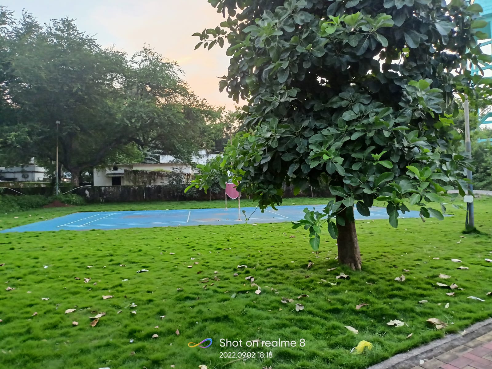

our facilities
The university has excellent IT Infrastructure facility for the students.
The Coffee Day beverage centre functioning at the NIT campus is open on all weekdays, from 8 am to 10 pm.
The sports department provides facilities for outdoor games like Cricket, Football, Hockey, Basketball, Badminton, Baseball, Lawn Tennis, Gymnastics, Volleyball, etc.
The NIT Raipur dispensary is situated near the side of the NCC office.
Presently there are two girls' hostels on the campus and a proposal for one more of 200 seaters is also in process.
The institute has 5 boys' hostel within the campus. Hostels A, B, C, D and F
have a dining hall cum recreation hall equipped with TV, table tennis and carrom, etc.

girls hostel
Institue has provided hostels for girls namely indravati , mahanadi.
well furnished and ventilated hostels.

Hostel
The institute provides a limited residential facility for boys and girls students.
There are 05 boys and 03 girls’ hostels within the campus

Sports ground
The Institute provides ample avenues for the development and nurturing of creative and other talents in the students through Sports Department.
All the activities are managed by students under the guidance of SAS Officer and Faculty In-Charge Sports.
The prime bodies under sports department are activity center and GYM, which provide avenues for various sports events, indoor and outdoor games.
Students are also encouraged and facilitated to take part in similar events in other institutions

Guest house
Guest House of the institute provides accommodation facility to the institute guests,
guests of the faculty/staff members of the institute, parents of the students,
visitors from other NITs and educational institutes,
participants of the activities organised by the institute and persons with approval from appropriate authorities

badminton ground
The institute provides a limited residential facility for faculties with this badminton ground in front of faculty quarters